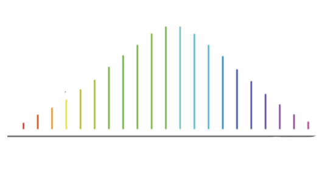

OFC is the process of generation coherently equally spaced spectral lines. Usually, such spectrum corresponds to a train of ultrashort pulses. Mode-locked fiber lasers are a typical source of such combs. However, there are several techniques due generate comb of varying linewidth and spacing. We have done some work on OFC, particularly using acoustic optic modulator under Talbot condition.

Acousto-optic optical frequency combs can easily produce several hundreds of mutually coherent lines from a single laser, by successive frequency shifts in a loop containing an acousto-optic frequency shifter. They combine many advantages for multi-heterodyne interferometry and dual-comb spectroscopy.